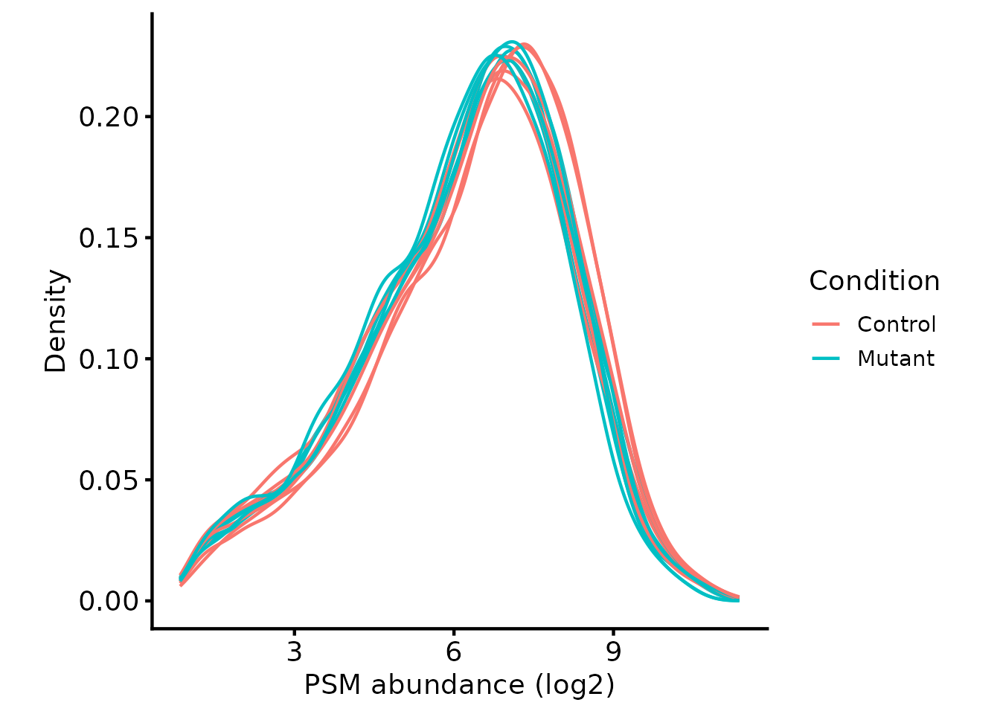
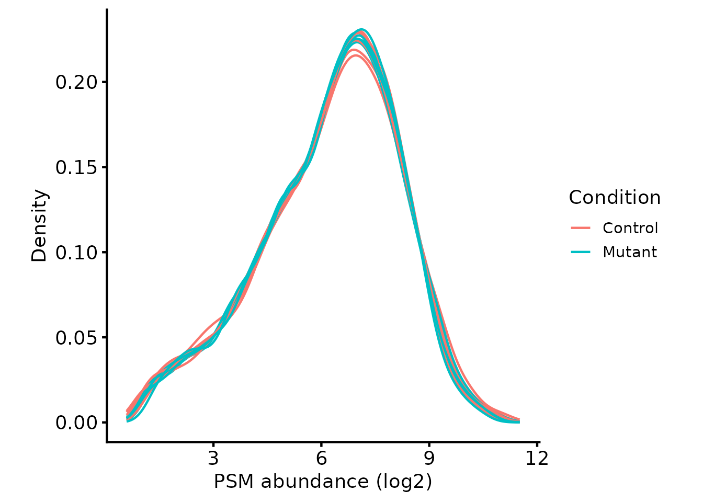
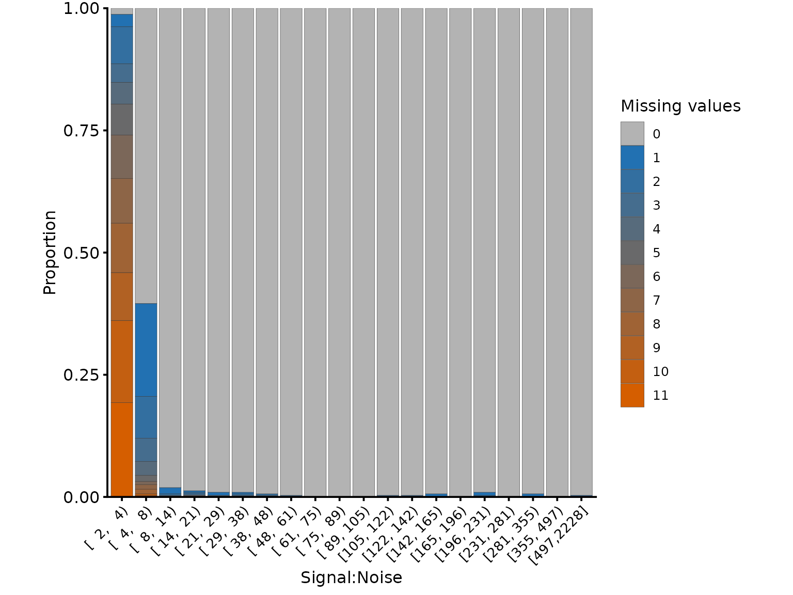
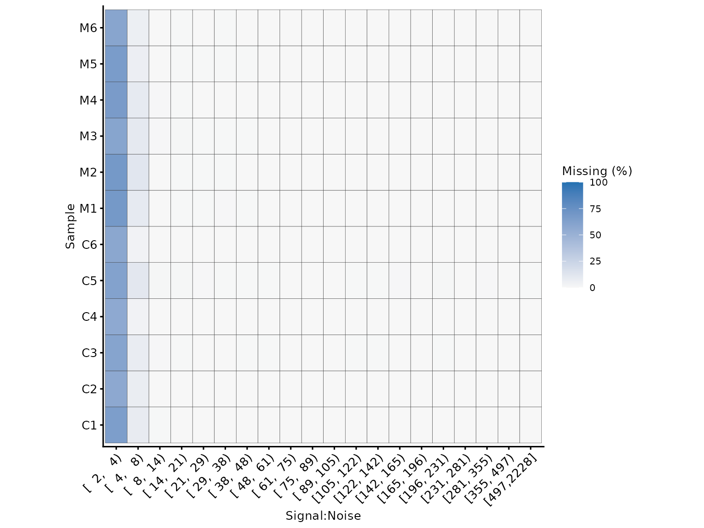
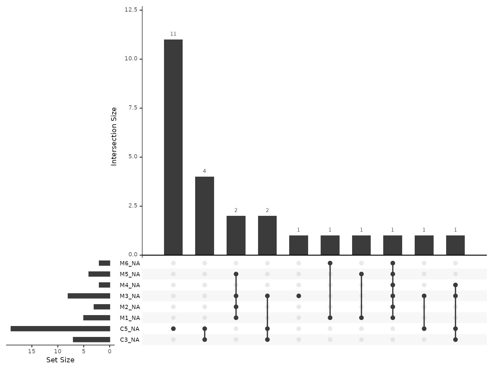
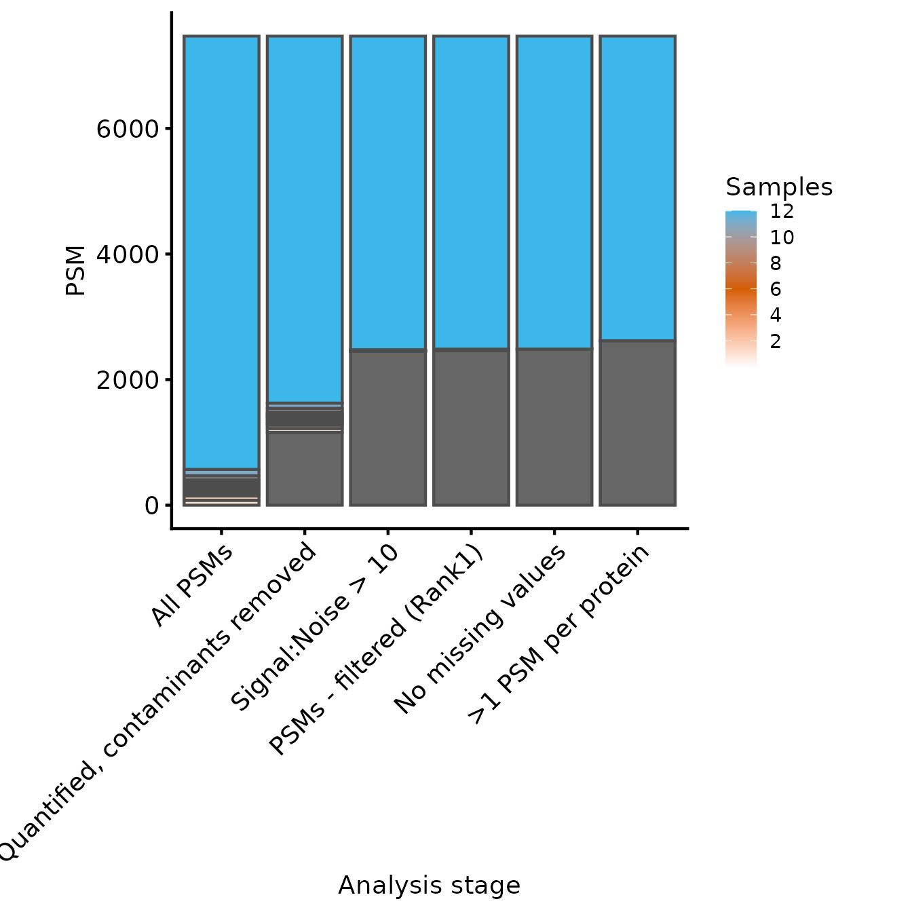
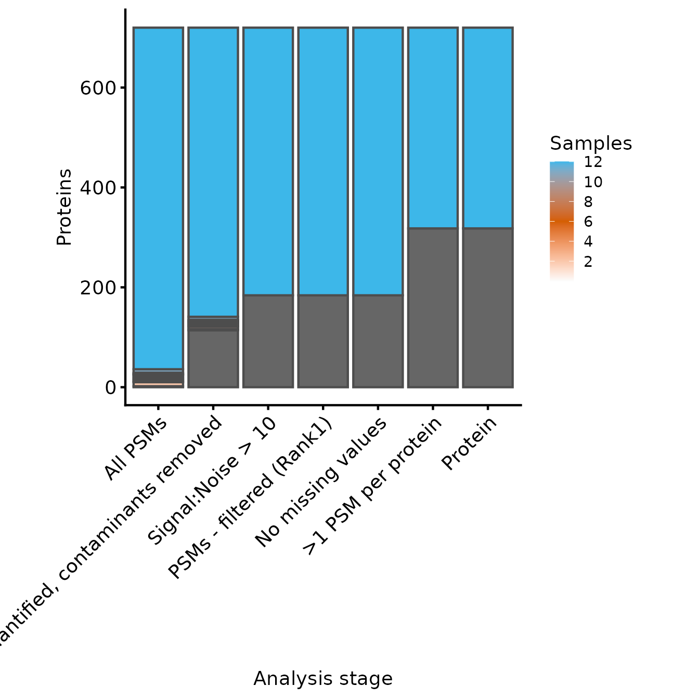

TMT workflow: PSM QC and protein summarisation
Tom Smith
2026-09-11
Source:vignettes/TMT_PSM_QC_Summarisation.Rmd
TMT_PSM_QC_Summarisation.RmdQuantitative proteomics using isobaric tagging such as Tandem Mass Tags (TMT) has a considerable benefit over Label-Free Quantification (LFQ) in that many samples can be quantified for each Peptide Spectrum Match (PSM). The standard TMTpro reagent set provides 18 channels (Li et al. 2021). Higher multiplexing is now commercially available, up to 35 channels, achieved by adding a set of deuterated reagents (Zuniga et al. 2024). The trade-off is that deuterium substitution shifts retention time and degrades coelution between the deuterated and non-deuterated channels, so the two sub-plexes have to be designed and normalised separately using bridge channels. This has multiple benefits over analysing samples in separate runs (LFQ):
- TMT reduces protein quantification variance since PSM-level quantification is derived from the same MS1 ion for all samples
- LFQ suffers from much higher missing values when comparing across samples due to the limited number of ions that can be fragmented in each run and the associated issue of peptides being identified in only a subset of runs (O’Connell et al. 2018). This is ameliorated to a significant degree by Data-Independent Acquisition (DIA) LFQ. However, DIA still involves quantifying each sample separately, so missing values are not entirely removed, and proteins in each sample may be quantified from different sets of peptides.
Because TMT quantifies from the same MS1 ion for all samples, this standardises the features quantified in each sample, which simplifies the comparison between samples and increases quantification accuracy of summarised features such as proteins.
However, TMT does suffer from ratio compression, caused by co-isolation of contaminating precursor ions that get fragmented alongside the target peptide and inflate the reporter ion signal. This should be avoided by performing quantification with SPS MS3 (McAlister et al. 2014).
This vignette works through one typical experiment from end to end: a whole-proteome comparison between two conditions, labelled in a single TMT plex and searched with Proteome Discoverer (PD). That combination covers the majority of TMT experiments, and the choices made below are the conventional ones for it.
Experiments that depart from it are covered separately, since the departures change the reasoning rather than just the code:
- Several plexes. A design too large for one plex needs each plex processed on its own and then brought onto a common scale — see multi-plex TMT.
- An enrichment design. An IP, BioID or TurboID experiment breaks the assumptions behind normalisation and behind discarding missing values — see enrichment designs.
- An enriched PTM fraction. Modified peptides have to be localised to a residue, summarised to sites rather than proteins, and normalised against a matched total fraction rather than against themselves — see PTM site quantification.
- MaxQuant instead of PD. The principles are the same, but the column names differ and two of the QC metrics used below — reporter signal:noise and SPS mass matches — are not reported at all, so the PSM quality filter has to be rebuilt around the one that is. Reading MaxQuant output at the end of this vignette covers what transfers and what does not.
The experimental design
psm_tmt_clock and tmt_clock_design are
datasets available from the biomasslmb package, derived
from a real TMT12plex experiment comparing Control and
Mutant samples (6 replicates each).
psm_tmt_clock is the PD PSM-level output, truncated to a
subset of proteins for a manageable vignette.
tmt_clock_design gives the experimental design: which
sample each TMT tag corresponds to, and its Condition and
Replicate.
knitr::kable(tmt_clock_design)| tag | Condition | Replicate | quantCols | |
|---|---|---|---|---|
| C1 | 130C | Control | 1 | C1 |
| C4 | 132N | Control | 4 | C4 |
| C5 | 128C | Control | 5 | C5 |
| C6 | 128N | Control | 6 | C6 |
| M1 | 126 | Mutant | 1 | M1 |
| M4 | 129N | Mutant | 4 | M4 |
| M3 | 133N | Mutant | 3 | M3 |
| C2 | 133C | Control | 2 | C2 |
| C3 | 130N | Control | 3 | C3 |
| M2 | 134C | Mutant | 2 | M2 |
| M6 | 131C | Mutant | 6 | M6 |
| M5 | 135N | Mutant | 5 | M5 |
Unlike a data.frame read from a single PD output file,
real experiments nearly always have an associated design table like this
(often as a spreadsheet from whoever ran the samples), which needs to be
read in and used both to make sense of the TMT tags and to define
experimental details for exploration and statistical testing.
Read in input data
The data go into a QFeatures object, the standard
Bioconductor container for quantitative proteomics data. See here
for documentation about the QFeatures object.
psm_tmt_clock contains the PSM-level output from PD for
this experiment, with the abundance columns already renamed to match the
sample names used in tmt_clock_design. Passing
tmt_clock_design as the colData keeps the
experimental design travelling with the quantification data.
readQFeatures() attaches the design at the object level
only, so sync_coldata() copies it onto the assay as well —
functions that plot or model a single assay, such as
plot_quant() below, read it from there. Working with QFeatures objects covers
this and the rest of the object’s vocabulary.
tmt_qf <- QFeatures::readQFeatures(assayData = psm_tmt_clock,
colData = tmt_clock_design,
quantCols = rownames(tmt_clock_design),
name = "psms_raw")
#> Checking arguments.
#> Loading data as a 'SummarizedExperiment' object.
#> Formatting sample annotations (colData).
#> Formatting data as a 'QFeatures' object.
tmt_qf <- sync_coldata(tmt_qf, "psms_raw")Defining the contaminant proteins
Contaminant proteins have to be removed. This search was performed
against the ‘0602_Universal Contaminants’ database (Frankenfield et al. 2022), so parsing that same
fasta gives the accessions to match against, in the
Cont_<UniProt accession> format PD reports them in.
PD sometimes assigns the bare UniProt accession as the master protein
even for a contaminant hit — matching on both forms costs nothing and
catches those.
contaminant_fasta_inf <- system.file(
"extdata", "0602_Universal_Contaminants.fasta.gz",
package = "biomasslmb"
)
# Extract the protein IDs associated with each contaminant protein
contaminant_accessions <- biomasslmb::get_contaminant_fasta_accessions(contaminant_fasta_inf)
contaminant_accessions <- c(contaminant_accessions, sub('^Cont_', '', contaminant_accessions))
print(head(contaminant_accessions))
#> [1] "Cont_P00722" "Cont_P09870" "Cont_P30879" "Cont_P0C1U8" "Cont_Q2FZL2"
#> [6] "Cont_P00698"Routine filtering removes PSMs that:
- Could originate from contaminants. See
?filter_features_pd_ddafor further details, including the removal of ‘associated’ contaminants. - Have more than one accession in the master protein column, meaning the search engine could not resolve which protein the PSM came from.
The accession list, the Cont_ prefix and PD’s own
Contaminant column are three separate defences, and they do
not always agree with one another. Contaminants and protein FDR
measures what each one catches and what is left behind when the database
naming does not match what the filter expects.
unique_master asks whether the search engine settled on
a single protein identity. The separate proteotypic
argument asks whether the peptide sequence occurs in only one protein at
all — a feature can have one unambiguous master protein and still be
shared with the other members of that protein group. See peptides are not proteins.
# Perform routine raw data filtering.
# - Remove PSMs from contaminant proteins
# - Remove PSMs with no master protein, or with more than one
tmt_qf[['psms_filtered']] <- filter_features_pd_dda(tmt_qf[['psms_raw']],
contaminant_proteins=contaminant_accessions,
filter_contaminant=TRUE,
filter_associated_contaminant=TRUE,
unique_master=TRUE)
#> Filtering data...
#> 11281 features found from 790 master proteins => Input
#> 762 contaminant proteins supplied
#> 4949 proteins identified as 'contaminant associated'
#> 9785 features found from 746 master proteins => contaminant features removed
#> 8956 features found from 727 master proteins => associated contaminant features removed
#> 8956 features found from 727 master proteins => PD-labelled 'Contaminants' removed
#> 8953 features found from 726 master proteins => features without a master protein removed
#> 8822 features found from 648 master proteins => features with non-unique master proteins removed
#> 6312 features found from 606 master proteins => features without quantification removed
tmt_qf <- sync_coldata(tmt_qf, 'psms_filtered')Normalise
biomasslmb::plot_quant shows whether the PSM intensity
distributions are approximately the same across channels. Colouring by
Condition answers a second question at the same time —
whether the two conditions already separate before any normalisation or
filtering, which would point at a labelling or loading problem rather
than at biology.
# Plot the peptide-level quantification distributions per sample
biomasslmb::plot_quant(tmt_qf[['psms_filtered']],
log2transform=TRUE,
method='density') +
theme_biomasslmb() +
aes(colour=Condition, group=sample) +
xlab('PSM abundance (log2)')
The same amount of material was labelled in every channel, and this
is a whole-proteome comparison in which most proteins are expected to be
unchanged, so any systematic offset between those distributions is
technical. diff.median normalisation with
QFeatures::normalize shifts each channel to a common median
and removes it. The abundances are log-transformed first, so that the
shift is multiplicative on the original scale, then exponentiated back
afterwards — sum summarisation below needs untransformed
values.
That assumption is worth stating explicitly, because it is the step most easily carried into an experiment where it does not hold: an enrichment design expects the conditions to differ in overall composition, and normalising to a common median there erodes the signal being measured.
# Normalise the log2-transformed abundances using diff.median
tmt_qf[['psms_filtered_norm']] <- QFeatures::normalize(
logTransform(tmt_qf[['psms_filtered']], base=2), method='diff.median')
# Exponentiate the quantification values back to the initial scale.
assay(tmt_qf[['psms_filtered_norm']]) <- 2^assay(tmt_qf[['psms_filtered_norm']])
tmt_qf <- sync_coldata(tmt_qf, 'psms_filtered_norm')
# Plot the peptide-level quantification distributions per sample
biomasslmb::plot_quant(tmt_qf[['psms_filtered_norm']],
log2transform=TRUE,
method='density') +
theme_biomasslmb() +
aes(colour=Condition, group=sample) +
xlab('PSM abundance (log2)')
Removing low quality PSMs
Low Signal:Noise (S:N) PSMs are worth removing on two counts at once:
their quantification is less accurate, and they account for most of the
missing values. plot_missing_SN shows the relationship
between the two.
Missing channels are concentrated below S:N 10 and scarce above it. That coincidence is what makes a single S:N threshold the right tool here — it removes the PSMs that generate missing values and the PSMs whose measured values are least trustworthy, in one filter, without any modelling.
# Add a more accurate average S:N ratio value.
# The one calculated by PD doesn't treat NA values appropriately!
tmt_qf[['psms_filtered_norm']] <- update_average_sn(tmt_qf[['psms_filtered_norm']])
plot_missing_SN(tmt_qf[['psms_filtered_norm']], bins = 20)
Missing values per PSM, in relation to the signal:noise ratio
plot_missing_SN_per_sample breaks the same relationship
down by tag, which is how a labelling failure in one channel shows up:
that tag would keep dropping values where the others do not. No tag
behaves that way here above S:N 10.
plot_missing_SN_per_sample(tmt_qf[['psms_filtered_norm']], bins = 20)
Missing values per tag, in relation to the signal:noise ratio
filter_TMT_PSMs applies both thresholds the plots above
justify: S:N > 10, and interference/co-isolation < 50%. The second
targets a different problem — a PSM whose isolation window contained
more than one precursor reports a blend of their reporter ions, so its
ratios are compressed towards no change rather than merely noisy. Enrichment designs shows what the
interference distribution looks like when the threshold has to be argued
rather than assumed.
# Then filter PSMs to remove low S:N and/or high interference
tmt_qf[['psms_filtered_sn']] <- filter_TMT_PSMs(tmt_qf[['psms_filtered_norm']],
inter_thresh=50, sn_thresh=10)
#> Filtering PSMs...
#> 6312 features found from 606 master proteins => Initial PSMs
#> 5751 features found from 587 master proteins => PSMs with Quan.Info removed
#> 5751 features found from 587 master proteins => PSMs which are not selected or unambiguous removed
#> 5751 features found from 587 master proteins => Removing PSMs without quantification values
#> 5663 features found from 583 master proteins => Removing PSMs with high Co-isolation/interference
#> 5021 features found from 536 master proteins => Removing PSMs with low average S:N ratio
#> Not performing filtering by SPS-MM (`spsmm_thresh`=0)
tmt_qf <- sync_coldata(tmt_qf, 'psms_filtered_sn')Peptides that are not rank 1 according to the search engine are removed next.
tmt_qf[['psms_filtered_rank']] <- tmt_qf[['psms_filtered_sn']]
tmt_qf <- tmt_qf %>%
filterFeatures(~ Rank == 1, i = 'psms_filtered_rank')
#> 'Rank' found in 5 out of 5 assay(s).
message_parse(rowData(tmt_qf[['psms_filtered_rank']]),
'Master.Protein.Accessions',
"Removing peptides that are not rank 1")
#> 5012 features found from 536 master proteins => Removing peptides that are not rank 1Summarising to protein-level abundances
With the PSM-level quantification inspected and filtered, the PSMs can be summarised to protein-level abundances.
Summarisation takes the master protein assignment at face value: every PSM contributes to exactly one protein, the one the search engine assigned it to. That assignment is an inference rather than a measurement, and for proteins whose peptides are largely shared with their homologues it is not a reliable one. Peptides are not proteins covers how the assignment is made and how to tell which of your proteins it can support.
For TMT, summing the PSM-level abundances gives accurate protein
estimates so long as there are no missing values. Where there are many,
MsCoreUtils::robustSummary is the better estimator, since
it summarises accurately without complete data (Sticker et al. 2020). Which of those applies is
a property of the dataset rather than a preference, so it is settled
below by measurement. Comparing
protein summarisation approaches runs both on this dataset and on
one where the answer goes the other way.
Exploring missing values
Before deciding how to handle missing values, it’s worth checking how
much missingness there is, and whether it’s random or structured by
experimental condition. Condition-structured missingness (e.g. a PSM
detected in every Control sample but no Mutant
sample) can indicate a real biological or technical difference between
conditions, and should make you wary of simply discarding those PSMs.
Missingness scattered independently of condition, on the other hand,
more likely reflects individual TMT channels whose intensity falls
around the limit of detection: the S:N filter above is applied per-PSM,
so a PSM can pass that threshold overall while one or two of its
channels still drop out.
plot_missing_upset visualises the most common patterns
of missingness across samples. Samples with no missing PSMs at all are
omitted from the plot, since they don’t contribute to any missingness
pattern.
plot_missing_upset(tmt_qf, i = 'psms_filtered_rank')
condition_miss_score complements this by fitting, for
each PSM, a logistic regression of missingness against a
colData grouping column, and returning Tjur’s R² as a
per-feature score: values near 1 mean a PSM’s missingness pattern is
well explained by Condition, values near 0 mean it looks
unrelated to Condition. condition_miss_index
aggregates these per-feature scores into a single dataset-level value
between 0 and 1.
miss_res <- condition_miss_score(tmt_qf, i = 'psms_filtered_rank', group_cols = 'Condition')
#> Analysing assay 'psms_filtered_rank': 5012 features x 12 samples
#> Group variable: Condition (2 levels: Control, Mutant)
#> Results: 25 informative features | mean condition miss score = 0.175 | condition-structured: 0.0% | condition-independent: 0.4%
condition_miss_index(miss_res$summary)$index
#> Condition missingness index: 0.0014 | Weighted mean score: 0.2744 | Coverage: 0.5% (25 / 5012 features informative) [coverage penalty applied]
#> [1] 0.001368517Missing values are both rare and unstructured here,
which is what settles the summarisation choice. Only 25 of 5012 PSMs
have any missing value at all, and the condition missingness index is
close to zero, so there is no evidence that the missingness there is
tracks Condition.
That makes the simplest route the defensible one: discard the PSMs with any missing value and sum the rest. The cost is those PSMs, and it is small precisely because they are few — in a dataset where they were many, or where they clustered in one condition, the same step would discard a large fraction of the data or the signal itself. The LFQ-DDA workflow works through a dataset where the trade comes out the other way.
Complete data is a requirement rather than a convenience for
sum. Summing over whatever PSMs happen to be present would
build a protein’s abundance from different PSMs in different samples, so
the resulting values would not be comparable across the very samples
they exist to be compared between.
tmt_qf[['psms_filtered_missing']] <- QFeatures::filterNA(
tmt_qf[['psms_filtered_rank']], 0)PSMs belonging to proteins with fewer than 2 PSMs are then removed, so that every protein quantification rests on at least two independent observations. The filter is not always right: in phosphoproteomics a site is often supported by one PSM and discarding it discards the measurement, which is why PTM site quantification does not apply it.
min_psms <- 2
tmt_qf[['psms_filtered_forSum']] <- biomasslmb::filter_features_per_protein(
tmt_qf[['psms_filtered_missing']], min_features = min_psms)Then the summarisation itself.
# Aggregate to protein-level abundances (using QFeatures function)
tmt_qf <- QFeatures::aggregateFeatures(tmt_qf,
i = "psms_filtered_forSum",
fcol = "Master.Protein.Accessions",
name = "protein",
fun = base::colSums)
tmt_qf <- sync_coldata(tmt_qf, 'protein')
tmt_qf[['protein']] <- QFeatures::logTransform(
tmt_qf[['protein']], base=2)Inspecting the number of PSMs and proteins through the processing steps
Each filtering step above removed something, and the totals are
easier to judge together than one message at a time.
get_samples_present() and
plot_samples_present() show how many PSMs and proteins
survived each stage, and in how many samples. Both take a named
character vector selecting the assays to plot, since the
QFeatures names are not self-explanatory.
The assay names to choose from:
names(tmt_qf)
#> [1] "psms_raw" "psms_filtered" "psms_filtered_norm"
#> [4] "psms_filtered_sn" "psms_filtered_rank" "psms_filtered_missing"
#> [7] "psms_filtered_forSum" "protein"psms_filtered_norm is left out: it holds the normalised
quantification of psms_filtered and no PSMs were removed at
that step, so it would plot as a duplicate.
Samples per PSM
PSMs first. The row variables are Sequence,
Modifications and RT.in.min, so that the count
is of unique PSMs rather than of rows.
rename_cols <- c('All PSMs' = 'psms_raw' ,
'Quantified, contaminants removed' = 'psms_filtered',
'Signal:Noise > 10' = 'psms_filtered_sn',
'PSMs - filtered (Rank1)' = 'psms_filtered_rank',
'No missing values' = 'psms_filtered_missing',
'>1 PSM per protein' = 'psms_filtered_forSum')
rowvars <- c('Sequence', 'Modifications', 'RT.in.min')
samples_present <- get_samples_present(tmt_qf[,,unname(rename_cols)], rowvars, rename_cols)
#> Warning: 'experiments' dropped; see 'drops()'
#> harmonizing input:
#> removing 24 sampleMap rows not in names(experiments)
plot_samples_present(samples_present, rowvars, breaks=seq(2,12,2)) + ylab('PSM')
#> Scale for fill is already present.
#> Adding another scale for fill, which will replace the existing scale.
Samples quantified for each PSM at each level of processing
Samples per Protein
Then proteins, from the same functions: the named vector gains the
protein assay, and the row variable becomes
Master.Protein.Accessions alone.
rename_cols_prot <- c(rename_cols, 'Protein'='protein')
rowvars_prot <- c('Master.Protein.Accessions')
samples_present <- get_samples_present(tmt_qf, rowvars_prot, rename_cols_prot)
plot_samples_present(samples_present, rowvars_prot, breaks=seq(2,12,2))
#> Scale for fill is already present.
#> Adding another scale for fill, which will replace the existing scale.
Samples quantified for each protein at each level of processing
The two-PSM rule is cheap in PSMs and expensive in proteins. It removes few PSMs, because most PSMs belong to proteins that have several; it removes many more proteins, because a protein identified by one PSM loses its only evidence. Those proteins are the ones whose quantification would have been least reliable, so the trade is usually worth making — but it is a trade, and an experiment targeting a low-abundance protein family may not want it.
# Save file to package as data so it can be read back in in other vignettes
usethis::use_data(tmt_qf, overwrite=TRUE)Summary
The PSMs were QCed and filtered in the following steps:
- Remove PSMs that are likely from contaminants
- Remove PSMs without a unique ‘master protein’
- Remove PSMs without any quantification values
- Normalise the abundance values so they have the same median value in all samples, which is reasonable here because the same amount of material was labelled in every channel
- Remove PSMs with very low signal:noise and high interference
The PSM-level abundances were then summarised to protein level with
sum, having first removed the small number of PSMs with any
missing value. See the Comparing
protein summarisation approaches vignette for a direct comparison
against robustSummary, and the Data exploration and
statistical testing vignette for how to explore and statistically
test the resulting protein-level data using the experimental design
attached here.
Two of those steps are specific to this being a straightforward whole-proteome comparison in a single plex. Normalising to a common median assumes most proteins are unchanged, which an enrichment design violates, and summing complete PSMs is only cheap because within-plex missingness is low — between plexes it is not, which is what multi-plex TMT addresses.
Reading MaxQuant output
Everything above is Proteome Discoverer specific in its column names,
and one section of it more deeply than that. This part covers what
transfers to MaxQuant and what does not, using
psm_tmt_factorial: the evidence.txt PSM-level
output from a TMT18plex whole-proteome experiment, with
tmt_factorial_design. It is subsetted to a random sample of
proteins, so the counts below are smaller than a full experiment’s, but
every filtering step is doing real work on real PSMs.
| Quantity | Proteome Discoverer | MaxQuant |
|---|---|---|
| Protein assignment | Master.Protein.Accessions |
Leading.razor.protein |
| All candidate proteins | Protein.Accessions |
Proteins |
| Contaminant accessions | search FASTA, Cont_ prefix |
get_maxquant_cont_accessions(), CON__
prefix |
| Decoy flag | removed before export | Reverse |
| Search engine rank | Rank |
not reported per PSM |
| Co-isolation | Isolation.Interference.in.Percent |
PIF |
| Reporter signal:noise | Average.Reporter.SN |
not reported |
| SPS mass matches | SPS.Mass.Matches.in.Percent |
not reported |
| Missing quantification | empty | 0 |
The design is crossed rather than a single comparison: three cell lines, each treated with a vehicle or a compound, in three replicates.
knitr::kable(tmt_factorial_design)| Genotype | Treatment | Replicate | quantCols | |
|---|---|---|---|---|
| Line_A_Control_1 | Line_A | Control | 1 | Line_A_Control_1 |
| Line_AB_Control_1 | Line_AB | Control | 1 | Line_AB_Control_1 |
| Line_A_Control_2 | Line_A | Control | 2 | Line_A_Control_2 |
| Line_AB_Control_2 | Line_AB | Control | 2 | Line_AB_Control_2 |
| Line_B_Treated_1 | Line_B | Treated | 1 | Line_B_Treated_1 |
| Line_B_Control_2 | Line_B | Control | 2 | Line_B_Control_2 |
| Line_B_Treated_2 | Line_B | Treated | 2 | Line_B_Treated_2 |
| Line_B_Control_1 | Line_B | Control | 1 | Line_B_Control_1 |
| Line_AB_Treated_1 | Line_AB | Treated | 1 | Line_AB_Treated_1 |
| Line_A_Control_3 | Line_A | Control | 3 | Line_A_Control_3 |
| Line_A_Treated_3 | Line_A | Treated | 3 | Line_A_Treated_3 |
| Line_B_Treated_3 | Line_B | Treated | 3 | Line_B_Treated_3 |
| Line_AB_Control_3 | Line_AB | Control | 3 | Line_AB_Control_3 |
| Line_A_Treated_1 | Line_A | Treated | 1 | Line_A_Treated_1 |
| Line_AB_Treated_2 | Line_AB | Treated | 2 | Line_AB_Treated_2 |
| Line_A_Treated_2 | Line_A | Treated | 2 | Line_A_Treated_2 |
| Line_B_Control_3 | Line_B | Control | 3 | Line_B_Control_3 |
| Line_AB_Treated_3 | Line_AB | Treated | 3 | Line_AB_Treated_3 |
Nothing in the reading or filtering below depends on that structure. It starts to matter at the point of testing, where a second factor changes both what the model should contain and what its coefficients mean, and data exploration and statistical testing picks this dataset up there.
tmt_mq <- QFeatures::readQFeatures(assayData = psm_tmt_factorial,
colData = tmt_factorial_design,
quantCols = rownames(tmt_factorial_design),
name = 'psms_raw')
tmt_mq <- sync_coldata(tmt_mq, 'psms_raw')One step has no counterpart in the PD workflow and has to come first.
MaxQuant writes an intensity of exactly zero where it has no
measurement, whereas PD leaves the cell empty. Mass spectrometry cannot
assert that a peptide was absent, only that it was not detected, so
those zeros have to become NA — left as they are they are
treated as real measurements at the bottom of the scale, and they pull
every median, every summarisation and every fold change towards it.
tmt_mq[['psms_raw']] <- QFeatures::zeroIsNA(tmt_mq[['psms_raw']])filter_features_mq_dda() replaces
filter_features_pd_dda(), and takes its contaminant
accessions from get_maxquant_cont_accessions() rather than
from a search FASTA, because MaxQuant searches against its own
contaminants database with CON__ prefixed accessions. It
also removes hits to the decoy database, which PD has already removed
before the PSM export exists.
tmt_mq[['psms_filtered']] <- filter_features_mq_dda(
tmt_mq[['psms_raw']],
contaminant_proteins = get_maxquant_cont_accessions(),
filter_contaminant = TRUE,
filter_associated_contaminant = TRUE)
tmt_mq <- sync_coldata(tmt_mq, 'psms_filtered')Normalisation is unchanged, and rests on the same assumption: equal loading per channel, and most proteins unchanged between conditions.
tmt_mq[['psms_norm']] <- QFeatures::normalize(
logTransform(tmt_mq[['psms_filtered']], base = 2), method = 'diff.median')
assay(tmt_mq[['psms_norm']]) <- 2^assay(tmt_mq[['psms_norm']])
tmt_mq <- sync_coldata(tmt_mq, 'psms_norm')The low-quality PSM section is the part that does not
transfer. MaxQuant does not report reporter ion signal:noise at
all, so the S:N threshold that does most of the quality filtering above
has no counterpart, and neither has the SPS mass match percentage. What
remains is PIF, the precursor intensity fraction, which
measures the same thing as PD’s co-isolation percentage from the other
direction: the fraction of the isolation window accounted for by the
intended precursor, so a high PIF is good where a high
interference percentage is bad.
summary(rowData(tmt_mq[['psms_norm']])$PIF)
#> Min. 1st Qu. Median Mean 3rd Qu. Max. NA's
#> 0.0000 0.8318 0.9343 0.8735 0.9756 1.0000 1156Two consequences follow, and both are worth taking seriously rather than working around.
The first is that filtering has to lean on PIF alone,
which controls for co-isolation but says nothing about how close a
reporter ion was to the noise. The PD filter above discarded PSMs on
both counts, and only one of them is available here.
The second is that PIF is itself frequently
NA, reported only where MaxQuant could assess the window —
1156 of 17639 PSMs here — so a threshold on it carries a second decision
about what to do with the PSMs it cannot assess. Discarding them is the
conservative choice and the one taken below.
The threshold itself is a judgement rather than a standard. The
direct counterpart of the PD filter used above, interference under 50%,
is PIF above 0.5, which would remove 650 PSMs; the stricter
PIF above 0.75 used here removes 2594. The stricter
threshold buys cleaner ratios at the price of those PSMs, and is worth
it in a whole-proteome experiment where PSMs are plentiful. In an
experiment where they are not — a low-input sample, or a protein of
interest identified by two peptides — the same threshold can remove the
measurement being sought.
pif <- rowData(tmt_mq[['psms_norm']])$PIF
tmt_mq[['psms_pif']] <- tmt_mq[['psms_norm']][!is.na(pif) & pif > 0.75, ]
tmt_mq <- sync_coldata(tmt_mq, 'psms_pif')
nrow(tmt_mq[['psms_pif']])
#> [1] 13889The rank filter has no MaxQuant equivalent and is simply omitted:
evidence.txt reports the accepted match rather than every
candidate, and the confidence filtering has already been applied through
MaxQuant’s posterior error probabilities.
Missing values are the one thing to re-check rather than carry over. The argument above for discarding PSMs with any missing value rested on there being very few, and that in turn rested on the S:N filter, which is not available here — so it has to be re-made on this dataset.
miss_mq <- condition_miss_score(tmt_mq, i = 'psms_pif', group_cols = 'Treatment')
#> Analysing assay 'psms_pif': 13889 features x 18 samples
#> Group variable: Treatment (2 levels: Control, Treated)
#> Results: 278 informative features | mean condition miss score = 0.063 | condition-structured: 0.0% | condition-independent: 1.9%
condition_miss_index(miss_mq$summary)$index
#> Condition missingness index: 0.0014 | Weighted mean score: 0.0676 | Coverage: 2.0% (278 / 13889 features informative) [coverage penalty applied]
#> [1] 0.001352647The argument survives. Only 278 of 13889 PSMs have
any missing value, and the condition missingness index is near zero, so
discarding them costs little and loses nothing that tracks
Treatment.
tmt_mq[['psms_complete']] <- QFeatures::filterNA(tmt_mq[['psms_pif']], 0)
tmt_mq[['psms_forSum']] <- filter_features_per_protein(
tmt_mq[['psms_complete']],
master_protein_col = 'Leading.razor.protein',
min_features = 2)
tmt_mq <- sync_coldata(tmt_mq, 'psms_forSum')Summarisation is then the same operation with a different column
name. Leading.razor.protein replaces
Master.Protein.Accessions everywhere it appears as a
master_protein_col or an fcol, which is the
single most common cause of a MaxQuant analysis failing partway through
a workflow written for PD.
tmt_mq <- QFeatures::aggregateFeatures(tmt_mq,
i = 'psms_forSum',
fcol = 'Leading.razor.protein',
name = 'protein',
fun = base::colSums)
tmt_mq <- sync_coldata(tmt_mq, 'protein')
tmt_mq[['protein']] <- QFeatures::logTransform(tmt_mq[['protein']], base = 2)
nrow(tmt_mq[['protein']])
#> [1] 1173
# Save to the package so the testing vignette can read it back in. Only the
# protein assay is kept: the PSM-level assays are already available as
# `psm_tmt_factorial`, and carrying them here would make the saved object an
# order of magnitude larger.
tmt_qf_factorial <- tmt_mq[, , 'protein']
usethis::use_data(tmt_qf_factorial, overwrite = TRUE)Where to go next
Both routes above end in the same place: protein-level abundances
with the experimental design attached, summarised with
sum.
- Data exploration and statistical testing picks up from exactly that object — checking the experiment worked, deciding which proteins can be tested, and testing them.
- Multiplexed TMT covers what changes once a design runs to more than one plex. Summing complete PSMs is cheap here only because within-plex missingness is low; between plexes it is not, and a bridge channel rather than a summarisation choice is what makes the plexes comparable.
-
Comparing protein summarisation
approaches measures
sumagainstrobustSummaryon this dataset and on one where the answer goes the other way. - The contaminant filtering above rests on three separate defences that do not always agree; contaminants and protein FDR shows what each one catches and how a silent failure looks.
Getting help
If your experiment does not fit what this article assumes, or a result looks wrong, please get in touch with Tom Smith (tsmith@mrclmb.ac.uk) rather than guessing — it is far easier to help while an analysis is in progress than to unpick a decision afterwards, and easier still before the samples are run. Getting started sets out which article applies to which experiment.
sessionInfo()
#> R version 4.5.3 (2026-03-11)
#> Platform: x86_64-pc-linux-gnu
#> Running under: Ubuntu 24.04.5 LTS
#>
#> Matrix products: default
#> BLAS: /usr/lib/x86_64-linux-gnu/openblas-pthread/libblas.so.3
#> LAPACK: /usr/lib/x86_64-linux-gnu/openblas-pthread/libopenblasp-r0.3.26.so; LAPACK version 3.12.0
#>
#> locale:
#> [1] LC_CTYPE=C.UTF-8 LC_NUMERIC=C LC_TIME=C.UTF-8
#> [4] LC_COLLATE=C.UTF-8 LC_MONETARY=C.UTF-8 LC_MESSAGES=C.UTF-8
#> [7] LC_PAPER=C.UTF-8 LC_NAME=C LC_ADDRESS=C
#> [10] LC_TELEPHONE=C LC_MEASUREMENT=C.UTF-8 LC_IDENTIFICATION=C
#>
#> time zone: UTC
#> tzcode source: system (glibc)
#>
#> attached base packages:
#> [1] stats4 stats graphics grDevices utils datasets methods
#> [8] base
#>
#> other attached packages:
#> [1] dplyr_1.2.1 tidyr_1.3.2
#> [3] ggplot2_4.0.3 biomasslmb_0.1.0
#> [5] QFeatures_1.20.0 MultiAssayExperiment_1.36.2
#> [7] SummarizedExperiment_1.40.0 Biobase_2.70.0
#> [9] GenomicRanges_1.62.1 Seqinfo_1.0.0
#> [11] IRanges_2.44.0 S4Vectors_0.48.1
#> [13] BiocGenerics_0.56.0 generics_0.1.4
#> [15] MatrixGenerics_1.22.0 matrixStats_1.5.0
#>
#> loaded via a namespace (and not attached):
#> [1] DBI_1.3.0 gridExtra_2.3.1 rlang_1.3.0
#> [4] magrittr_2.0.5 clue_0.3-68 otel_0.2.0
#> [7] compiler_4.5.3 RSQLite_3.53.3 png_0.1-9
#> [10] systemfonts_1.3.2 vctrs_0.7.3 reshape2_1.4.5
#> [13] stringr_1.6.0 ProtGenerics_1.42.0 pkgconfig_2.0.3
#> [16] crayon_1.5.3 fastmap_1.2.0 backports_1.5.1
#> [19] XVector_0.50.0 labeling_0.4.3 rmarkdown_2.32
#> [22] UpSetR_1.4.1 visdat_0.6.0 ragg_1.5.2
#> [25] purrr_1.2.2 bit_4.6.0 xfun_0.60
#> [28] cachem_1.1.0 jsonlite_2.0.0 blob_1.3.0
#> [31] DelayedArray_0.36.1 cluster_2.1.8.2 R6_2.6.1
#> [34] bslib_0.12.0 stringi_1.8.9 RColorBrewer_1.1-3
#> [37] genefilter_1.92.0 rpart_4.1.24 jquerylib_0.1.4
#> [40] Rcpp_1.1.2 knitr_1.52 base64enc_0.1-6
#> [43] BiocBaseUtils_1.12.0 nnet_7.3-20 Matrix_1.7-4
#> [46] splines_4.5.3 igraph_2.3.3 tidyselect_1.2.1
#> [49] rstudioapi_0.19.0 abind_1.4-8 yaml_2.3.12
#> [52] lattice_0.22-9 tibble_3.3.1 plyr_1.8.9
#> [55] withr_3.0.3 KEGGREST_1.50.0 S7_0.2.2
#> [58] evaluate_1.0.5 uniprotREST_1.0.0 foreign_0.8-91
#> [61] desc_1.4.3 survival_3.8-6 Biostrings_2.78.0
#> [64] pillar_1.11.1 corrplot_0.95 checkmate_2.3.4
#> [67] scales_1.4.0 xtable_1.8-8 glue_1.8.1
#> [70] Hmisc_5.3-0 lazyeval_0.2.3 tools_4.5.3
#> [73] data.table_1.18.6.1 robustbase_0.99-7 annotate_1.88.0
#> [76] fs_2.1.0 XML_3.99-0.24 grid_4.5.3
#> [79] cutr_0.0.0.9000 colorspace_2.1-3 MsCoreUtils_1.22.1
#> [82] AnnotationDbi_1.72.0 htmlTable_2.5.0 Formula_1.2-6
#> [85] naniar_1.1.0 cli_3.6.6 textshaping_1.0.5
#> [88] S4Arrays_1.10.1 AnnotationFilter_1.34.0 gtable_0.3.6
#> [91] DEoptimR_1.2-1 sass_0.4.10 digest_0.6.39
#> [94] SparseArray_1.10.10 htmlwidgets_1.6.4 farver_2.1.2
#> [97] memoise_2.0.1 htmltools_0.5.9 pkgdown_2.2.1
#> [100] lifecycle_1.0.5 httr_1.4.9 bit64_4.8.6
#> [103] MASS_7.3-65